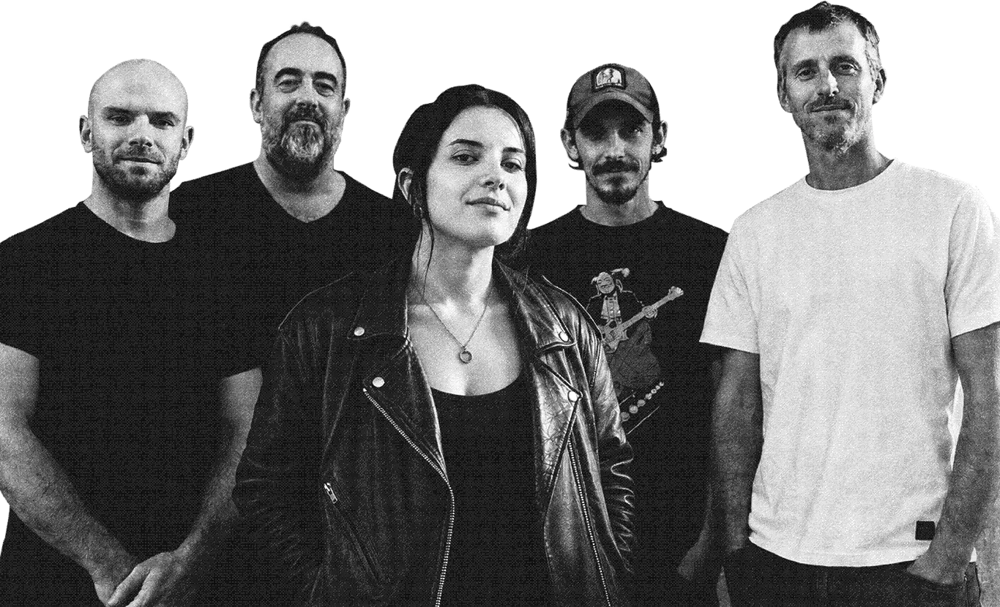

Bar de la Marine
The Baïdon'sY aller →

Cinq musiciens, une voix devant, et une conviction : une reprise ne vaut que si elle prend des risques.
Nés dans les bars de Marseille, The Baïdon's fouillent six décennies de rock, de funk et de pop pour en ressortir des versions qui ne s'excusent pas. Le garage sixties croise le groove psyché, un standard soul dérape en fuzz, une rengaine française se réveille en électrique.
L'élégance canaille de Gainsbourg comme boussole : tenir le morceau, puis le laisser filer pile au bon moment. Sur scène, ça transpire, ça déraille, et personne ne regarde l'heure.
Bars, festivals, mariages canailles, soirées privées — on ramène le fuzz et le groove. Écrivez-nous, on répond vite.